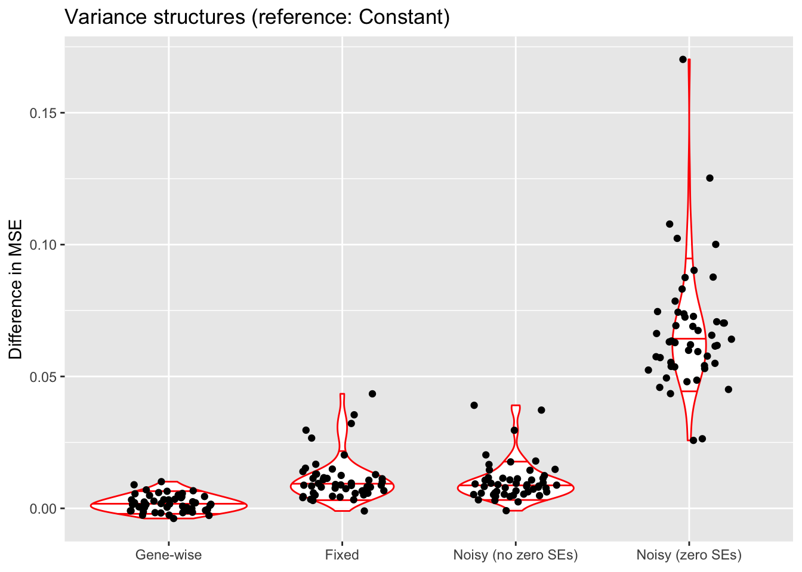
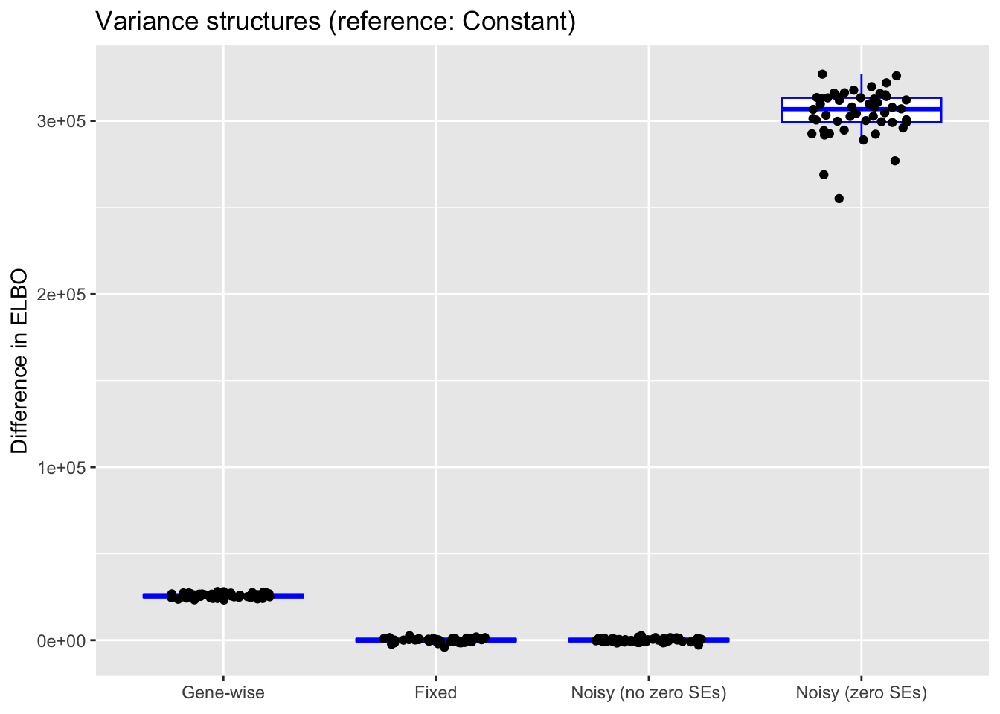
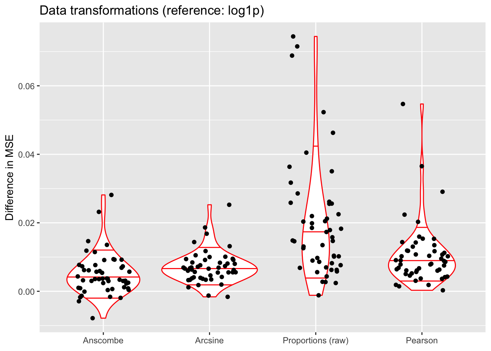
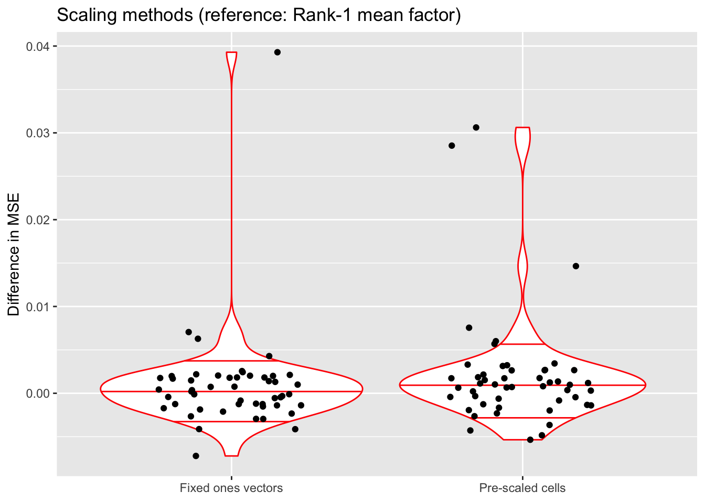
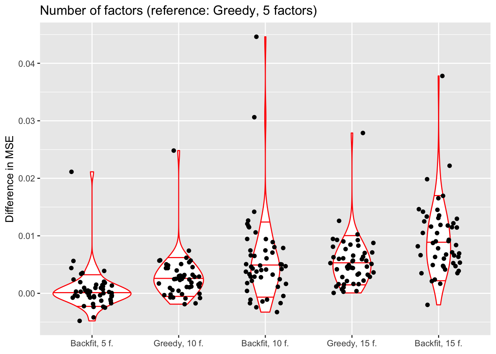
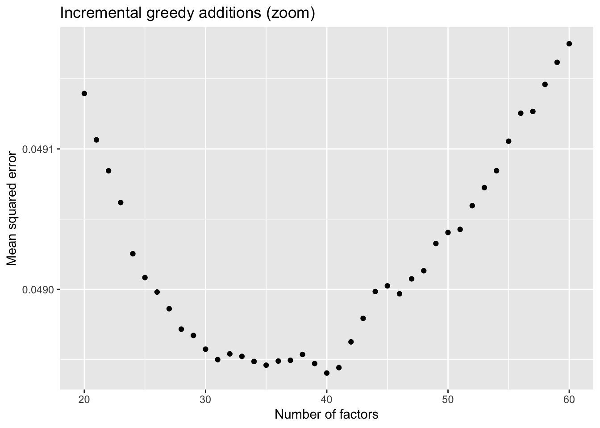

Comparing methods for fitting flash to single-cell data
Jason Willwerscheid
3/17/2019
Last updated: 2019-04-08
Checks: 6 0
Knit directory: scFLASH/
This reproducible R Markdown analysis was created with workflowr (version 1.2.0). The Report tab describes the reproducibility checks that were applied when the results were created. The Past versions tab lists the development history.
Great! Since the R Markdown file has been committed to the Git repository, you know the exact version of the code that produced these results.
Great job! The global environment was empty. Objects defined in the global environment can affect the analysis in your R Markdown file in unknown ways. For reproduciblity it’s best to always run the code in an empty environment.
The command set.seed(20181103) was run prior to running the code in the R Markdown file. Setting a seed ensures that any results that rely on randomness, e.g. subsampling or permutations, are reproducible.
Great job! Recording the operating system, R version, and package versions is critical for reproducibility.
Nice! There were no cached chunks for this analysis, so you can be confident that you successfully produced the results during this run.
Great! You are using Git for version control. Tracking code development and connecting the code version to the results is critical for reproducibility. The version displayed above was the version of the Git repository at the time these results were generated.
Note that you need to be careful to ensure that all relevant files for the analysis have been committed to Git prior to generating the results (you can use wflow_publish or wflow_git_commit). workflowr only checks the R Markdown file, but you know if there are other scripts or data files that it depends on. Below is the status of the Git repository when the results were generated:
Ignored files:
Ignored: .Rproj.user/
Note that any generated files, e.g. HTML, png, CSS, etc., are not included in this status report because it is ok for generated content to have uncommitted changes.
These are the previous versions of the R Markdown and HTML files. If you’ve configured a remote Git repository (see ?wflow_git_remote), click on the hyperlinks in the table below to view them.
| File | Version | Author | Date | Message |
|---|---|---|---|---|
| Rmd | 395b82c | Jason Willwerscheid | 2019-04-08 | workflowr::wflow_publish(“analysis/sc_comparisons.Rmd”) |
| html | 047bb2f | Jason Willwerscheid | 2019-04-05 | Build site. |
| Rmd | 5c40841 | Jason Willwerscheid | 2019-04-05 | wflow_publish(“analysis/sc_comparisons.Rmd”) |
| html | 8a15568 | Jason Willwerscheid | 2019-04-01 | Build site. |
| Rmd | 57d374a | Jason Willwerscheid | 2019-04-01 | wflow_publish(“analysis/sc_comparisons.Rmd”) |
| html | cb2c9c5 | Jason Willwerscheid | 2019-03-25 | Build site. |
| Rmd | d4e8255 | Jason Willwerscheid | 2019-03-25 | wflow_publish(“analysis/sc_comparisons.Rmd”) |
| html | 60843e0 | Jason Willwerscheid | 2019-03-22 | Build site. |
| Rmd | b792cfe | Jason Willwerscheid | 2019-03-22 | wflow_publish(“analysis/sc_comparisons.Rmd”) |
Introduction
Here I compare various methods for fitting flash objects to single-cell data. I use the drop-seq dataset discussed in Montoro et al., which includes counts for approximately 18000 genes and 7000 cells. Close to 90% of counts are equal to zero.
I perform 50 trials. For each trial, I subsample 200 cells, then I subsample 500 genes from the set of genes that have at least 3 non-zero counts among the subsampled cells. I remove 1000 entries at random from the resulting data matrix, fit a series of flash objects, and calculate mean squared errors on the log1p scale, using flash posterior means as fitted values and the original data as ground truth. I compare different variance structures, data transformations, scaling methods, priors, and numbers of factors.
Additionally, to paint a more granular picture of how additional factors affect mean squared error, I incrementally fit “greedy” flash objects with 1 to 60 factors using the full drop-seq dataset (not just a subsample).
Code
Click “Code” to view the code used to run the tests.
# library(ashr) -- uncomment after negative mixture proportions bug is fixed
devtools::load_all("~/Github/ashr")
# library(flashier) -- uncomment after pushing 0.1.1 updates to master
devtools::load_all("~/Github/flashier")
library(Matrix)
library(ggplot2)
# Load data ---------------------------------------------------------------
# The drop-seq dataset in Montoro et al. can be downloaded here:
# https://www.ncbi.nlm.nih.gov/geo/query/acc.cgi?acc=GSE103354
trachea <- read.table("./data/GSE103354_Trachea_droplet_UMIcounts.txt")
trachea <- as.matrix(trachea)
trachea <- Matrix(trachea)
# Set test parameters -----------------------------------------------------
# Number of times to subsample data and run fits.
ntrials <- 50
# Size of subsampled data matrices.
ncells <- 200
ngenes <- 500
# Minimum number of nonzero counts needed to include a gene.
min.cts <- 3
# Proportion of entries to impute.
prop.missing <- 0.01
nmissing <- ceiling(prop.missing * ncells * ngenes)
# Number of factors to add to each fit.
K <- 5
# "Nonmissingness threshold", which deals with an issue that can occur when
# some data is missing. I will discuss it elsewhere.
nonmissing.thresh <- c(0.5, 0.5)
# Verbose flag for flashier output.
verbose <- FALSE
# Set up data frames ------------------------------------------------------
create.df <- function(names) {
names <- paste0(names, ".")
df.names <- outer(names, c("mse", "elbo"), FUN = paste0)
df <- data.frame(rep(list(numeric(0)), length(df.names)))
names(df) <- t(df.names)
return(df)
}
# Test 1: variance structure.
var.df <- create.df(c("constant", "genewise", "fixed", "noisyA", "noisyB"))
# Test 2: data transformation.
trans.df <- create.df(c("log1p", "anscombe", "arcsin", "raw", "pearson"))
# Test 3: normalization method.
norm.df <- create.df(c("none", "fitmean", "scale"))
# Test 4: prior type.
prior.df <- create.df(c("normal", "nngeneA", "nngeneB", "nncellA", "nncellB"))
# Test 5: number of factors and backfit.
nfactors.df <- create.df(c("g1", "bf1", "g2", "bf2", "g3", "bf3"))
# Functions for populating data frames ------------------------------------
get.fitted <- function(fl) {
# Get fitted values on the log1p scale.
fitted.vals <- flashier:::lowrank.expand(fl$fit$EF)
# Convert to raw counts.
return(exp(fitted.vals) - 1)
}
log1p.mse <- function(true, preds) {
# Threshold out negative counts.
preds <- pmax(preds, 0)
return(mean((log1p(true) - log1p(preds))^2))
}
get.elbo <- function(fl, adjustment) {
return(fl$objective + adjustment)
}
all.metrics <- function(data, missing.vals,
fl, fitted.vals, elbo.adjustment) {
missing.idx <- which(is.na(data))
if (is.null(fitted.vals)) {
fitted.vals <- get.fitted(fl)
}
return(list(mse = log1p.mse(missing.vals, fitted.vals[missing.idx]),
elbo = get.elbo(fl, elbo.adjustment)))
}
get.df.row <- function(data, missing.vals,
fl.list,
mean.factors = NULL,
fitted.vals = NULL,
elbo.adjustment = NULL) {
if (is.null(fitted.vals)) {
fitted.vals = rep(list(NULL), length(fl.list))
}
if (is.null(elbo.adjustment)) {
elbo.adjustment = rep(list(0), length(fl.list))
}
return(unlist(mapply(all.metrics,
fl = fl.list,
fitted.vals = fitted.vals,
elbo.adjustment = elbo.adjustment,
MoreArgs = list(data = data,
missing.vals = missing.vals))))
}
# Run tests ---------------------------------------------------------------
for (i in 1:ntrials) {
cat("TRIAL", i, "\n")
set.seed(i)
rand.cells <- sample(1:ncol(trachea), ncells)
samp <- trachea[, rand.cells]
rand.genes <- sample(which(rowSums(samp > 0) >= min.cts), ngenes)
samp <- samp[rand.genes, ]
missing.idx <- sort(sample(1:length(samp), nmissing))
missing.vals <- samp[missing.idx]
samp[missing.idx] <- NA
# Test 1: variance structure.
cat(" Running variance structure tests.\n")
fl.var0 <- flashier(log1p(samp), var.type = 0,
prior.type = "normal.mix",
greedy.Kmax = K + 1, backfit = "none",
nonmissing.thresh = nonmissing.thresh,
verbose.lvl = 1L * verbose)
fl.var1 <- flashier(log1p(samp), var.type = 1,
prior.type = "normal.mix",
greedy.Kmax = K + 1, backfit = "none",
nonmissing.thresh = nonmissing.thresh,
verbose.lvl = 1L * verbose)
S <- sqrt(samp) / (samp + 1)
nz.prop <- sum(samp > 0, na.rm = TRUE) / (length(samp) - length(missing.idx))
S[S == 0] <- sqrt(nz.prop) / (nz.prop + 1)
fl.fixS <- flashier(log1p(samp), S = S,
var.type = NULL,
prior.type = "normal.mix",
greedy.Kmax = K + 1, backfit = "none",
nonmissing.thresh = nonmissing.thresh,
verbose.lvl = 1L * verbose)
suppressMessages({
fl.noisyA <- flashier(log1p(samp), S = S,
var.type = 0,
prior.type = "normal.mix",
greedy.Kmax = K + 1, backfit = "none",
nonmissing.thresh = nonmissing.thresh,
verbose.lvl = 1L * verbose)
})
suppressMessages({
fl.noisyB <- flashier(log1p(samp), S = sqrt(samp) / (samp + 1),
var.type = 0,
prior.type = "normal.mix",
greedy.Kmax = K + 1, backfit = "none",
nonmissing.thresh = nonmissing.thresh,
verbose.lvl = 1L * verbose)
})
var.df[i, ] <- get.df.row(samp, missing.vals,
fl.list = list(fl.var0, fl.var1, fl.fixS,
fl.noisyA, fl.noisyB))
# Test 2: data transformation.
cat(" Running data transformation tests.\n")
fl.log1p <- fl.var0
log1p.adj <- -sum(log1p(samp), na.rm = TRUE)
fl.ans <- flashier(sqrt(samp + 0.375), var.type = 0,
prior.type = "normal.mix",
greedy.Kmax = K + 1, backfit = "none",
nonmissing.thresh = nonmissing.thresh,
verbose.lvl = 1L * verbose)
ans.fitted <- flashier:::lowrank.expand(fl.ans$fit$EF)^2 - 0.375
ans.adj <- -sum(log(2) + 0.5 * log(samp + 0.375), na.rm = TRUE)
cell.sums <- colSums(samp, na.rm = TRUE)
props <- samp / rep(cell.sums, each = nrow(samp))
fl.arcsin <- flashier(asin(sqrt(props)), var.type = 0,
prior.type = "normal.mix",
greedy.Kmax = K + 1, backfit = "none",
nonmissing.thresh = nonmissing.thresh,
verbose.lvl = 1L * verbose)
arcsin.fitted <- (sin(flashier:::lowrank.expand(fl.arcsin$fit$EF)^2)
* rep(cell.sums, each = nrow(samp)))
arcsin.adj <- NA
fl.raw <- flashier(props, var.type = 0,
prior.type = "normal.mix",
greedy.Kmax = K + 1, backfit = "none",
nonmissing.thresh = nonmissing.thresh,
verbose.lvl = 1L * verbose)
raw.fitted <- (flashier:::lowrank.expand(fl.raw$fit$EF)
* rep(cell.sums, each = nrow(samp)))
raw.adj <- -sum(rep(log(cell.sums), each = nrow(samp))[-missing.idx])
gene.props <- rowSums(samp, na.rm = TRUE) / sum(samp, na.rm = TRUE)
mu <- outer(gene.props, cell.sums)
sd.mat <- sqrt(mu - mu^2 / rep(cell.sums, each = nrow(samp)))
resid <- (samp - mu) / sd.mat
fl.pearson <- flashier(resid, var.type = 0,
prior.type = "normal.mix",
greedy.Kmax = K + 1, backfit = "none",
nonmissing.thresh = nonmissing.thresh,
verbose.lvl = 1L * verbose)
pearson.fitted <- mu + sd.mat * flashier:::lowrank.expand(fl.pearson$fit$EF)
pearson.adj <- -sum(log(sd.mat)[-missing.idx])
trans.df[i, ] <- get.df.row(samp, missing.vals,
fl.list = list(fl.log1p, fl.ans, fl.arcsin,
fl.raw, fl.pearson),
fitted.vals = list(get.fitted(fl.log1p),
ans.fitted, arcsin.fitted,
raw.fitted, pearson.fitted),
elbo.adjustment = list(log1p.adj,
ans.adj, arcsin.adj,
raw.adj, pearson.adj))
# Test 3: scaling method.
cat(" Running scaling tests.\n")
fl.none <- fl.var0
none.adj <- log1p.adj
fl.ones <- flashier(log1p(samp), var.type = 0,
prior.type = "normal.mix",
fixed.factors = c(ones.factor(2), ones.factor(1)),
greedy.Kmax = K,
backfit.after = 2, final.backfit = FALSE,
nonmissing.thresh = nonmissing.thresh,
verbose.lvl = 1L * verbose)
ones.adj <- log1p.adj
scaled.samp <- samp * median(cell.sums) / rep(cell.sums, each = nrow(samp))
fl.scale <- flashier(log1p(scaled.samp), var.type = 0,
prior.type = "normal.mix",
fixed.factors = ones.factor(2),
greedy.Kmax = K, backfit = "none",
nonmissing.thresh = nonmissing.thresh,
verbose.lvl = 1L * verbose)
scale.fitted <- (get.fitted(fl.scale)
* rep(cell.sums, each = nrow(samp)) / median(cell.sums))
scale.adj <- sum(log(median(cell.sums)) - rep(log(cell.sums), each = nrow(samp))
- log1p(scaled.samp), na.rm = TRUE)
norm.df[i, ] <- get.df.row(samp, missing.vals,
fl.list = list(fl.none, fl.ones, fl.scale),
fitted.vals = list(get.fitted(fl.none),
get.fitted(fl.ones),
scale.fitted),
elbo.adjustment = list(none.adj, ones.adj,
scale.adj))
# Test 4: prior type.
cat(" Running prior type tests.\n")
fl.normalmix <- fl.var0
fl.nngenes <- flashier(log1p(samp), var.type = 0,
prior.type = c("nonnegative", "normal.mix"),
greedy.Kmax = K + 1, backfit = "none",
nonmissing.thresh = nonmissing.thresh,
verbose.lvl = 1L * verbose)
fl.nngenes.pm <- flashier(log1p(samp), var.type = 0,
prior.type = c("nonnegative", "normal.mix"),
ash.param = list(method = "fdr"),
greedy.Kmax = K + 1, backfit = "none",
nonmissing.thresh = nonmissing.thresh,
verbose.lvl = 1L * verbose)
fl.nncells <- flashier(log1p(samp), var.type = 0,
prior.type = c("normal.mix", "nonnegative"),
greedy.Kmax = K + 1, backfit = "none",
nonmissing.thresh = nonmissing.thresh,
verbose.lvl = 1L * verbose)
fl.nncells.pm <- flashier(log1p(samp), var.type = 0,
prior.type = c("normal.mix", "nonnegative"),
ash.param = list(method = "fdr"),
greedy.Kmax = K + 1, backfit = "none",
nonmissing.thresh = nonmissing.thresh,
verbose.lvl = 1L * verbose)
prior.df[i, ] <- get.df.row(samp, missing.vals,
fl.list = list(fl.normalmix,
fl.nngenes, fl.nngenes.pm,
fl.nncells, fl.nncells.pm))
# Test 5: number of factors and backfit.
cat(" Running backfitting tests.\n")
fl.g <- fl.var0
fl.b <- flashier(flash.init = fl.g, backfit = "only",
backfit.reltol = 10,
verbose.lvl = 3L * verbose)
# Add K more factors, then K more.
fl.g2 <- flashier(flash.init = fl.g,
greedy.Kmax = K, backfit = "none",
verbose.lvl = 1L * verbose)
fl.b2 <- flashier(flash.init = fl.b,
greedy.Kmax = K, backfit = "final",
backfit.reltol = 10,
verbose.lvl = 3L * verbose)
fl.g3 <- flashier(flash.init = fl.g2,
greedy.Kmax = K, backfit = "none",
verbose.lvl = 1L * verbose)
fl.b3 <- flashier(flash.init = fl.b2,
greedy.Kmax = K, backfit = "final",
backfit.reltol = 10,
verbose.lvl = 3L * verbose)
nfactors.df[i, ] <- get.df.row(samp, missing.vals,
fl.list = list(fl.g, fl.b,
fl.g2, fl.b2,
fl.g3, fl.b3))
}
# Test 6: incremental addition of factors
set.seed(666)
data <- log1p(trachea[rowSums(trachea > 0) >= min.cts, ])
missing.idx <- sample(1:length(data), ceiling(prop.missing * length(data)))
true.vals <- exp(data[missing.idx]) - 1
data[missing.idx] <- NA
Kmax <- 60
fl <- flashier(data, var.type = 0,
prior.type = "point.normal",
fixed.factors = c(ones.factor(1), ones.factor(2)),
backfit.after = 2, final.backfit = FALSE,
greedy.Kmax = 1,
final.nullchk = FALSE,
nonmissing.thresh = nonmissing.thresh,
verbose.lvl = 3)
mse.vec <- log1p.mse(true.vals, get.fitted(fl)[missing.idx])
for (k in 2:Kmax) {
fl <- flashier(flash.init = fl,
greedy.Kmax = 1, backfit = "none",
final.nullchk = FALSE,
verbose.lvl = 3)
mse.vec <- c(mse.vec,
log1p.mse(true.vals, get.fitted(fl)[missing.idx]))
}
mse.diff <- c(NA, mse.vec[2:length(mse.vec)] - mse.vec[1:(length(mse.vec) - 1)])
mse.df <- data.frame(k = 1:Kmax, mse = mse.vec, mse.diff = mse.diff)
# Save results ------------------------------------------------------------
all.res <- list(var.df = var.df,
trans.df = trans.df,
norm.df = norm.df,
prior.df = prior.df,
nfactors.df = nfactors.df,
mse.df = mse.df)
saveRDS(all.res, "./output/sc_comparisons/allres.rds")allres <- readRDS("./output/sc_comparisons/allres.rds")Introduction to plots
For each comparison, I choose a “reference” method and plot the difference in mean squared error for each other method over all 50 trials. A positive value indicates worse performance. Importantly, mean squared error is calculated on the log1p scale in all cases. The red horizontal lines indicate the median and the 10% and 90% quantiles.
For reference, I also plot (usually without comment) differences in ELBO, adjusting via a change-of-variables formula where necessary. In principle, a higher ELBO should indicate a better fit.
Variance structures
The most commonly used transformations of single-cell data are log transforms with pseudocounts. Throughout these tests, my default procedure is to transform the raw counts using the log1p transform: \[ Y_{ij} = \log \left( X_{ij} + 1 \right) \]
Thus, the model that flashier fits is \[ \log \left( X_{ij} + 1 \right) = \sum_k L_{ik} F_{jk} + E_{ij}, \] with \[E_{ij} \sim N(0, \sigma_{ij}^2)\]
If one disregards sampling error, one can simply fit a constant variance structure \(\sigma_{ij}^2 = \sigma^2\) or a gene-wise variance structure \(\sigma_{ij}^2 = \sigma_j^2\), with \(\sigma^2\) (viz. \(\sigma_j^2\)) to be estimated.
However, if (as is reasonable to assume) the data is Poisson for some true expression levels \(\lambda_{ij}\): \[ X_{ij} \sim \text{Poisson} (\lambda_{ij}), \] then sampling errors will be much different for large and small counts. Expanding around the MLE \(\hat{\lambda}_{ij} = X_{ij}\): \[ \log (\lambda_{ij} + 1) \approx \log(X_{ij} + 1) + \frac{\lambda_{ij} - X_{ij}}{X_{ij} + 1} \] so that \[ \text{Var} \left( \log (\lambda_{ij} + 1) \right) \approx \frac{\lambda_{ij}}{(X_{ij} + 1)^2} \approx \frac{X_{ij}}{(X_{ij} + 1)^2}\] Ignoring approximation error, one can thus fix the standard errors at \[ S_{ij} = \frac{\sqrt{X_{ij}}}{X_{ij} + 1} \] Unfortunately, this sets \(S_{ij} = 0\) when \(X_{ij} = 0\). To circumvent this problem, I replace zeros with a very rough estimate of the baseline Poisson noise: \[ \lambda_0 := \frac{\#\{X_{ij}: X_{ij} \ne 0\}}{\#\{X_{ij}\}} \] That is, when \(X_{ij} = 0\), I set \[ S_{ij} = \frac{\sqrt{\lambda_0}}{\lambda_0 + 1} \]
Using flashier, one can also fit a model that includes both fixed sampling errors and an approximation error to be estimated, so that \[E_{ij} \sim N(0, S_{ij}^2 + \sigma^2)\] I try two approaches. One fixes the standard errors as described above, replacing \(S_{ij} = 0\) with \(S_{ij} = \sqrt{\lambda_0} / (\lambda_0 + 1)\). The other leaves standard errors of zero as they are and hopes that the estimated \(\sigma^2\) will be able to make up the difference. In both cases, the estimated \(\sigma^2\) is constant across genes and cells (estimating a noisy gene-wise variance structure is at present far too slow for large datasets).
library(ggplot2)
get.plot.df <- function(df, ref.lvl, type) {
tests <- colnames(df)
category <- sapply(strsplit(tests, '[.]'), `[`, 1)
metric <- sapply(strsplit(tests, '[.]'), `[`, 2)
df <- df[, which(metric == type)]
category <- category[which(metric == type)]
which.ref <- which(category == ref.lvl)
df <- df - df[, which.ref]
df <- df[, -which.ref]
category <- category[-which.ref]
return(data.frame(value = as.vector(as.matrix(df)),
category = rep(category, each = nrow(df))))
}
do.plots <- function(df, ref.lvl, title, xlimits, xlabels) {
mse.df <- get.plot.df(df, ref.lvl, type = "mse")
elbo.df <- get.plot.df(df, ref.lvl, type = "elbo")
mse.plot <- ggplot(mse.df, aes(x = category, y = value)) +
geom_violin(adjust = 1.5,
draw_quantiles = c(0.1, 0.5, 0.9),
color = "red") +
geom_jitter(position = position_jitter(0.25)) +
labs(x = NULL, y = "Difference in MSE", title = title) +
scale_x_discrete(limits = xlimits, labels = xlabels)
elbo.plot <- ggplot(elbo.df, aes(x = category, y = value)) +
geom_boxplot(colour = "blue", outlier.shape = NA) +
geom_jitter(position = position_jitter(0.25)) +
labs(x = NULL, y = "Difference in ELBO", title = title) +
scale_x_discrete(limits = xlimits, labels = xlabels)
print(mse.plot)
print(elbo.plot)
}
do.plots(allres$var.df, ref.lvl = "constant",
title = "Variance structures (reference: Constant)",
xlimits = c("genewise", "fixed", "noisyA", "noisyB"),
xlabels = c("Gene-wise", "Fixed",
"Noisy (no zero SEs)", "Noisy (zero SEs)"))

Discussion
A constant variance structure clearly works best. A gene-wise variance structure is a close second.
Fixing standard errors generally results in a poorer fit. It’s likely that my choice of standard error for entries with zero counts is too large, since the noisy variance structure that uses the same standard errors (“Noisy (no zero SEs)”) almost always estimates \(\sigma^2\) to be very close to zero (this is why results for these two variance structures are nearly identical).
The ELBO comparisons are not terribly meaningful. The reason why the ELBO is so high for “Noisy (zero SEs)” is simply that entries with zero counts are estimated to have very low standard errors.
Data transformations
Another way to handle unequal sampling errors is to use a variance-stabilizing transformation. I compare the log1p transform to the Anscombe transform (which stabilizes variance for Poisson data): \[ Y_{ij} = \sqrt{X_{ij} + \frac{3}{8}},\] and the arcsine transform (which stabilizes variance for proportions): \[ Y_{ij} = \text{arcsin}\left(\sqrt{\frac{X_{ij}}{\sum_j X_{ij}}}\right)\] In both cases, the magnitude of the sampling errors should be similar across all entries, so it should suffice to fit a constant variance structure.
Note that almost all gene proportions are small, and that the arcsine function is approximately linear for small \(x\). Thus the arcsine transformation is not much different from a square-root transformation of the proportions, which in turn might not be much different from the untransformed proportions. For purposes of comparison, then, I also fit a flash object to the untransformed proportions: \[ Y_{ij} = \frac{X_{ij}}{\sum_j X_{ij}} \]
Finally, I fit a flash object to Pearson residuals, using a binomial approximation to the multinomial distribution as recommended by Townes et al. (The authors prefer to use deviance residuals, but transforming predicted deviance residuals to raw counts is not trivial.)
In all cases, I calculate mean-squared error on the log1p scale. While it is true that this might bias the results in favor of the log1p transform, it can be justified as the relative error in the fitted counts (adding a pseudocount to avoid division by zero).
For the log1p and Anscombe transforms, I fit an additional rank-one “mean” factor (which simply amounts to fitting 6 factors instead of 5). Since the other transforms fit scaled data, no additional mean factor needs to be fitted.
do.plots(allres$trans.df, ref.lvl = "log1p",
title = "Data transformations (reference: log1p)",
xlimits = c("anscombe", "arcsin", "raw", "pearson"),
xlabels = c("Anscombe", "Arcsine", "Proportions (raw)", "Pearson"))
| Version | Author | Date |
|---|---|---|
| 047bb2f | Jason Willwerscheid | 2019-04-05 |
Discussion
The Anscombe and arcsine transforms are both outperformed by the log1p transform, and (unsurprisingly) fitting the untransformed matrix of proportions generally does worst of all (but maybe not as poorly as expected). Interestingly, fitting the Pearson residuals performs nearly as poorly.
The log1p transform performs best in terms of both MSE and ELBO, but it also allows for a simple interpretation of factors as multiplicative effects. Further, it is possible to fit scaling factors so that loadings are comparable among one another (as discussed in the following section). (Since factors are not multiplicative under the Anscombe transform, one cannot directly fit scaling factors.)
(Note that in each case, the ELBO has been adjusted using a change-of-variables formula. Since the arcsine transformation is not differentiable at zero, its ELBO cannot be adjusted.)
Scaling methods
Ideally, one would like factor loadings to be comparable across genes even though mean expression can vary by several orders of magnitude. Mean expression varies much less across cells, but one should also account for differences in cell size. One way to achieve both of these goals is to add fixed mean factors to perform row- and column-specific scaling. Specifically, I fit a fixed row vector of all ones with column loadings \(c_j\) to be estimated and a fixed column vector of all ones with row loadings \(r_i\) to be estimated. This is approximately equivalent to estimating separate scaling factors for the rows and columns of the count data: \[ X_{ij} + 1 = e^{r_i}e^{c_j} \]
Compare to the case where FLASH estimates a single rank-one factor with row loadings \(r_i\) and column loadings \(c_j\): \[ X_{ij} + 1 = e^{r_i c_j} \] Here, the scaling factors are not independent. Do note, however, that when \(r_i\) and \(c_j\) are both small, \[ X_{ij} = e^{r_i c_j} - 1 \approx r_i c_j, \] so fitting a single factor might actually work well for small counts.
A third possible method scales the cells in advance (that is, before the log1p transform). Letting \(R_i\) be the total count for cell \(i\), I scale each cell by the factor \[ \frac{\text{median}(R_i)}{R_i} \] so that, in particular, each scaled cell has the same total count. (A mean factor for genes still needs to be fit so that gene loadings are comparable.) Although this method is conceptually simpler, it risks over-relying on a few genes with large counts. In principle, a bi-scaling method like the two discussed above should be more accurate.
do.plots(allres$norm.df, ref.lvl = "none",
title = "Scaling methods (reference: Rank-1 mean factor)",
xlimits = c("fitmean", "scale"),
xlabels = c("Fixed ones vectors", "Pre-scaled cells"))
| Version | Author | Date |
|---|---|---|
| 047bb2f | Jason Willwerscheid | 2019-04-05 |
Discussion
All methods do about equally well. Pre-scaling cells often yields a slightly better ELBO, but can also give an ELBO that’s much worse.
Since it is difficult to understand exactly what the rank-one mean factor is fitting, I prefer using fixed ones vectors or pre-scaling cells when doing an in-depth analysis of a particular dataset. But the rank-one approach is easier to implement (and a bit faster), so I adopt it as the default scaling method in all other tests throughout this analysis.
(As above, the ELBOs have been adjusted using a change-of-variables formula.)
Priors
For simplicity, I use normal-mixture priors as the default priors throughout this analysis, but using nonnegative priors for either genes or cells can enhance interpretability. The former yields sets of genes that co-express in the same direction, with cell loadings indicating whether expression levels for the gene set are above or below the mean. The latter can work better for clustering cells, since it yields sets of cells with one set of genes that is overexpressed and a second set that is underexpressed.
In both cases, I test two ashr parameter settings. method = "fdr" includes a point mass at zero in the prior, whereas method = "shrink" includes small mixture components but no point mass. In general, fdr is better for false discovery rate control while shrink tends to be slightly more accurate.
Since the normal-mixture prior is in principle the most flexible of all of these priors, I don’t expect the other priors to improve on the mean squared error. The primary reason for choosing to put a nonnegative prior along one of the two dimensions is interpretability, not accuracy.
do.plots(allres$prior.df, ref.lvl = "normal",
title = "Priors (reference: Normal mixture)",
xlimits = c("nncellA", "nncellB", "nngeneA", "nngeneB"),
xlabels = c("NN cells (shrink)", "NN cells (fdr)",
"NN genes (shrink)", "NN genes (fdr)"))

Discussion
In terms of mean squared error, each type of prior does approximately as well as normal-mixture priors. This is fairly surprising since 5 normal-mixture factors is in some sense equivalent to 10 semi-nonnegative factors. I’m not sure whether most of the useful information in a given factor is in one direction, or whether 5 normal-mixture factors are already beginning to overfit the data (as discussed in the following section).
Putting a nonnegative prior on cells (rather than genes) gives a slightly better MSE, but putting a nonnegative prior on genes generally gives a better ELBO, with marginally better results for method = "shrink". Still, deciding whether and where to put a nonnegative prior largely comes down to a matter of preference.
Number of factors and backfitting
In all previous tests, I fit 5 factors to each flash object. Here, I also fit 10 and 15 factors to see whether there’s any evidence of overfitting. Additionally, I look at how backfitting changes mean squared error.
do.plots(allres$nfactors.df, ref.lvl = "g1",
title = "Number of factors (reference: Greedy, 5 factors)",
xlimits = c("bf1", "g2", "bf2", "g3", "bf3"),
xlabels = c("Backfit, 5 f.", "Greedy, 10 f.", "Backfit, 10 f.",
"Greedy, 15 f.", "Backfit, 15 f."))

Discussion
The results suggest that overfitting (in the sense of predictive accuracy) occurs well before the ELBO stops improving. The ten- and fifteen-factor fits are usually worse than the five-factor fits, and the backfits are on average worse than the corresponding greedy fits.
To further analyze the dynamics of overfitting, I fit a single factor to the full drop-seq dataset (after removing 1% of entries at random) and calculate mean squared error, then I fit a second factor, and so on until 60 factors have been added. Even though flashier continues to add factors throughout the process, the mean squared error no longer improves monotonically after 31 factors, and bottoms out at 40 factors.
The results imply that flashier is unable to add the “correct” number of factors for count data, and that some type of cross validation might be needed.
mse.df <- allres$mse.df
ggplot(mse.df, aes(x = k, y = mse)) + geom_point() +
labs(x = "Number of factors", y = "Mean squared error",
title = "Incremental greedy additions (full dataset)")
ggplot(subset(mse.df, k > 19), aes(x = k, y = mse)) + geom_point() +
labs(x = "Number of factors", y = "Mean squared error",
title = "Incremental greedy additions (zoom)")
sessionInfo()R version 3.5.3 (2019-03-11)
Platform: x86_64-apple-darwin15.6.0 (64-bit)
Running under: macOS Mojave 10.14.4
Matrix products: default
BLAS: /Library/Frameworks/R.framework/Versions/3.5/Resources/lib/libRblas.0.dylib
LAPACK: /Library/Frameworks/R.framework/Versions/3.5/Resources/lib/libRlapack.dylib
locale:
[1] en_US.UTF-8/en_US.UTF-8/en_US.UTF-8/C/en_US.UTF-8/en_US.UTF-8
attached base packages:
[1] stats graphics grDevices utils datasets methods base
other attached packages:
[1] ggplot2_3.1.0
loaded via a namespace (and not attached):
[1] Rcpp_1.0.1 knitr_1.22 whisker_0.3-2 magrittr_1.5
[5] workflowr_1.2.0 tidyselect_0.2.5 munsell_0.5.0 colorspace_1.4-1
[9] R6_2.4.0 rlang_0.3.1 dplyr_0.8.0.1 stringr_1.4.0
[13] plyr_1.8.4 tools_3.5.3 grid_3.5.3 gtable_0.3.0
[17] xfun_0.6 withr_2.1.2 git2r_0.25.2 htmltools_0.3.6
[21] assertthat_0.2.1 yaml_2.2.0 lazyeval_0.2.2 rprojroot_1.3-2
[25] digest_0.6.18 tibble_2.1.1 crayon_1.3.4 purrr_0.3.2
[29] fs_1.2.7 glue_1.3.1 evaluate_0.13 rmarkdown_1.12
[33] labeling_0.3 stringi_1.4.3 pillar_1.3.1 compiler_3.5.3
[37] scales_1.0.0 backports_1.1.3 pkgconfig_2.0.2